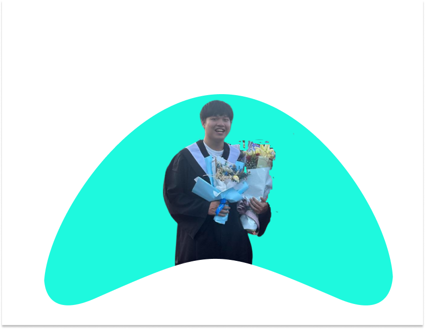

你好，我是Kevin!
對於前端這塊技術秉持著好奇和熱忱，透過學習來提升自己的實力。

關於我的一些事情
我是一名大學剛畢業的新鮮人，對前端開發非常有熱忱，會運用時間來了解框架像是目前在學習React、又或者理解一些後端的技術。
目前主要使用的工具為JavaScript、HTML、CSS(SCSS)、React
| 自我簡介 | 畢業於高雄科技大學，在去年12月也服役完了。興趣是運動、網頁開發。 |
| 學歷 | 高雄科技大學 電腦與通訊工程學士 |
| 語言 |
|
| 專長 |
|
| 作品 | 兩個網頁前端專案，分別是成績計算網以及貪吃蛇遊戲。用HTML做出基本網頁架構、CSS將網頁前端美化以及提升使用外觀、JavaScript來操縱網頁裡邏輯。 |